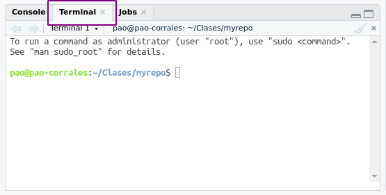

An R reproducibility toolkit for the practical researcher > Extras
Extras
Things we like (but don't have time to cover)
By Paola Corrales and Elio Campitelli
February 19, 2022
The terminal
If you use macOS or any flavour of Linux, the terminal will sound familiar. If you live in the Windows world, the terminal may be new to you. But you don’t need another workshop to work with it in the context of this workshop. For now you can use the terminal tab in RStudio or look for the Command Prompt in the list of programs you have installed.

If you want to read more about the terminal, we recommend this chapter from Happy Git with R. It git oriented but it’s includes everything you need to setup everything.
Parameterised reports
Sometimes you need to re-do a report changing one variable that repeats over all the code, the best way to do this is through a parameterised report.
In the following example there is a plot of the price distribution for ideal diamonds.
If you want to change it to visualise the data for “fair” or “very good” cut diamonds, you will have to change the filter(cut == "Ideal") and hopefully you wont forget the plot title.
library(dplyr)
library(ggplot2)
diamonds %>%
filter(cut == "Ideal") %>%
ggplot(aes(color, price)) +
geom_boxplot() +
labs(title = "Price distribution for ideal diamonds",
x = "Color",
y = "Price [US dollars]")

In these situations you can create a parameterised report.
To generate a parameterised report you have to add an element called params to the YAML with the list of parameters (1 or more) and their default values. It is as if the R Markdown file were a big function with its arguments!
params:
this_cut: Ideal
Then, in the R code you will have access to a variable called params which is a list containing the parameters and their values. To access the value of each parameter the $ operator is used as follows:
library(dplyr)
library(ggplot2)
diamonds %>%
filter(cut == params$this_cut) %>%
ggplot(aes(color, price)) +
geom_boxplot() +
labs(title = paste0("Price distribution for ", params$this_cut, " diamonds"),
x = "Color",
y = "Price [US dollars]")